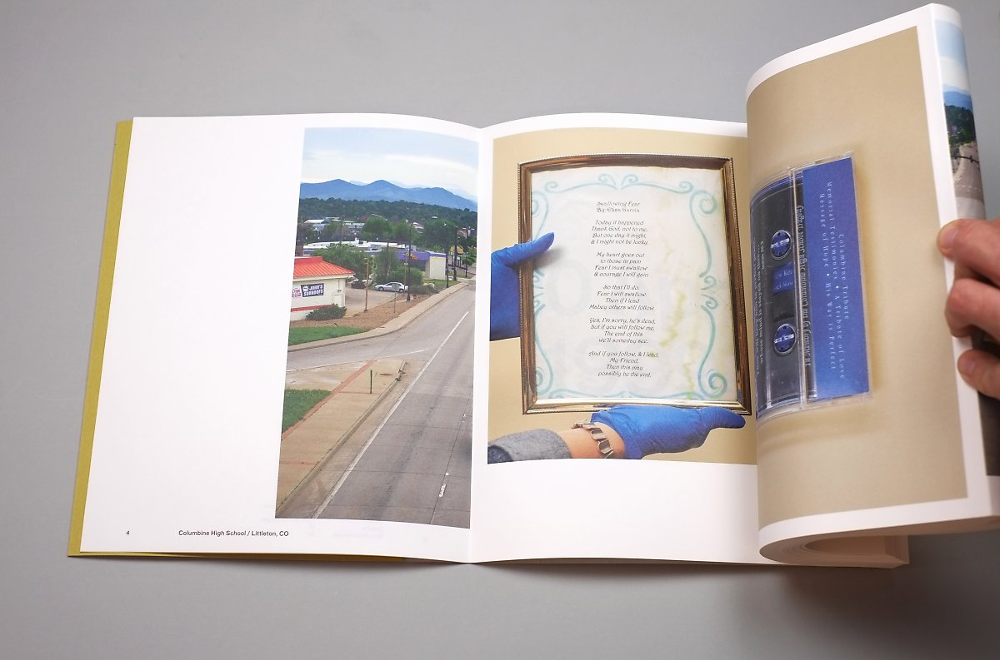
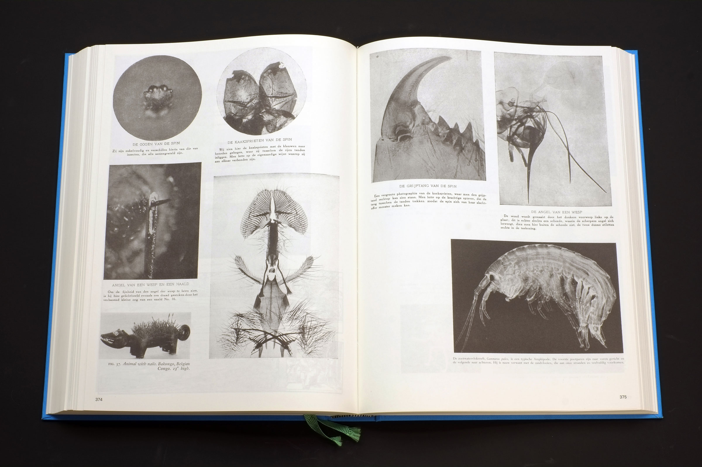
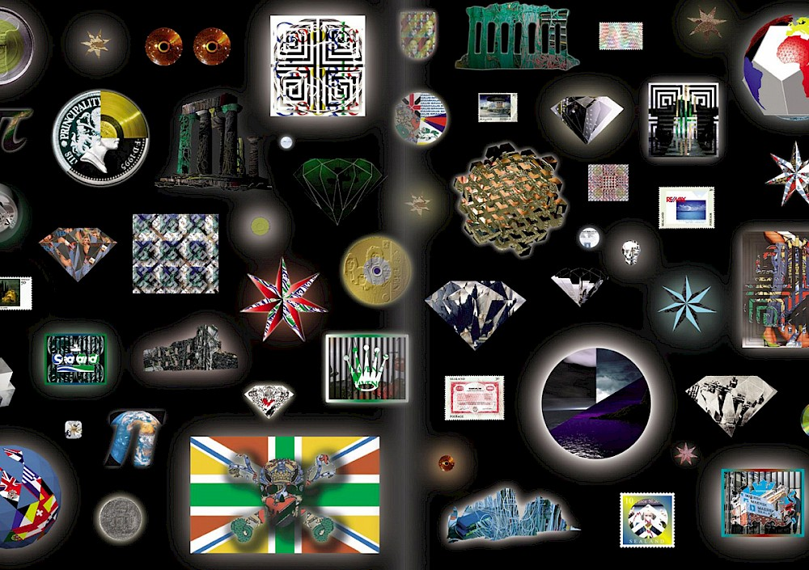
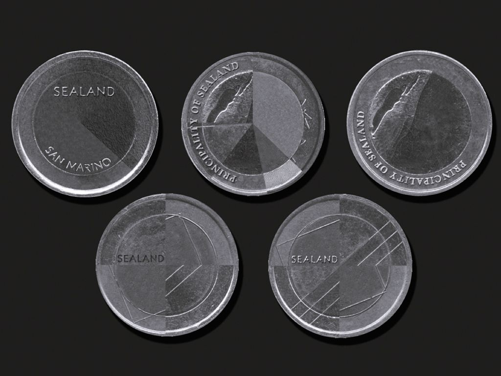
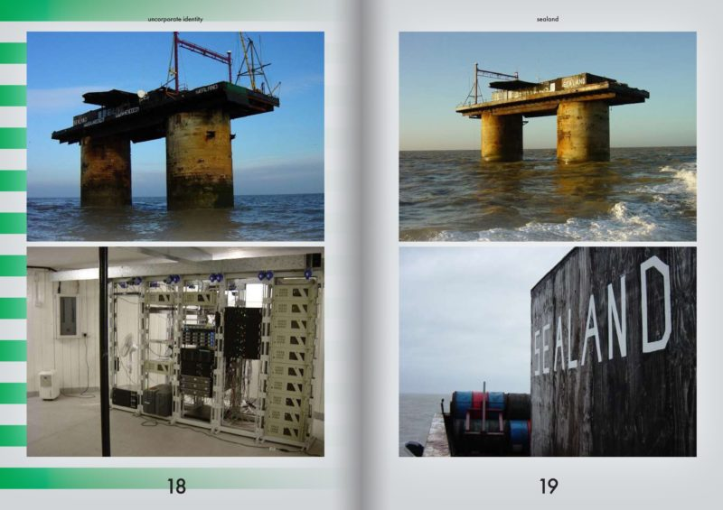
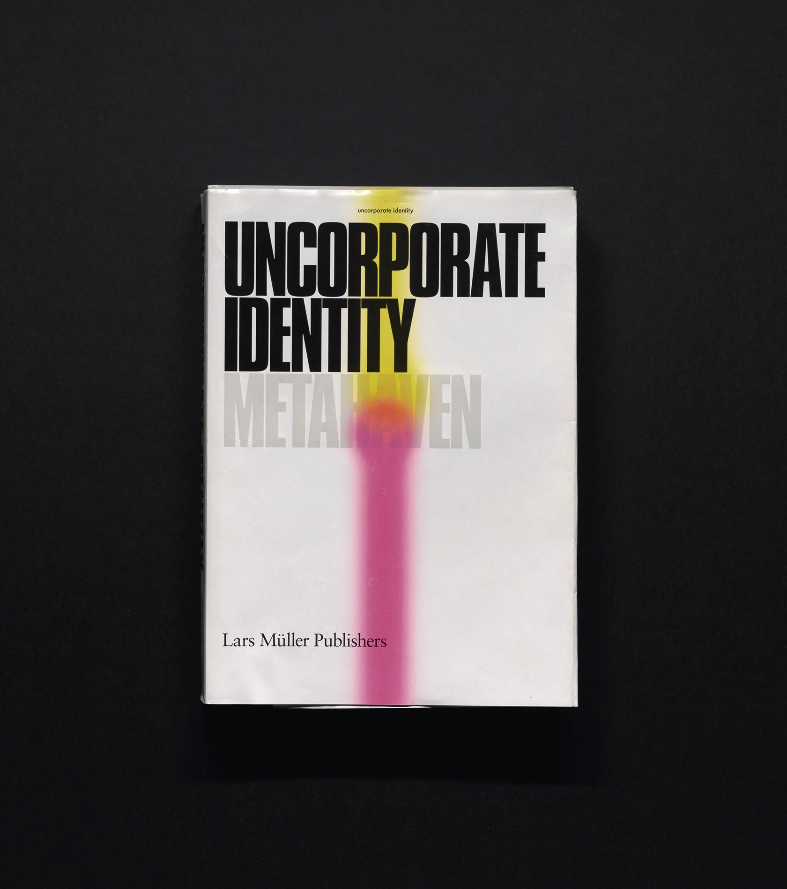
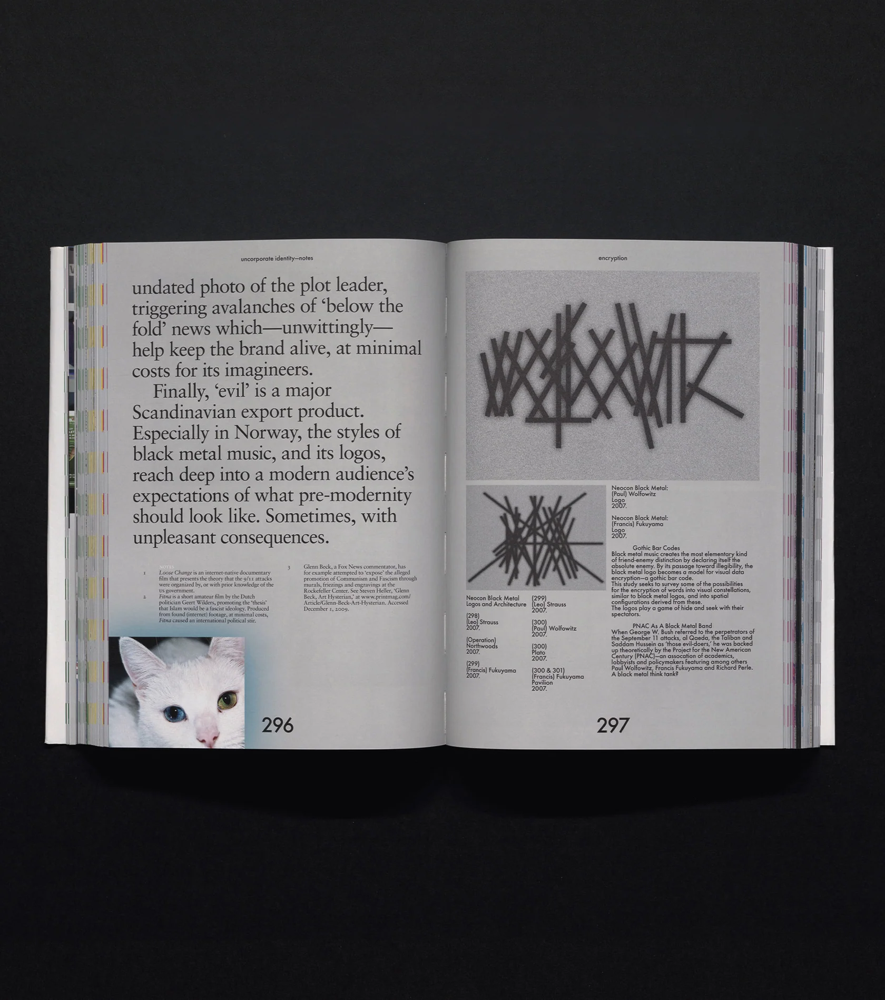
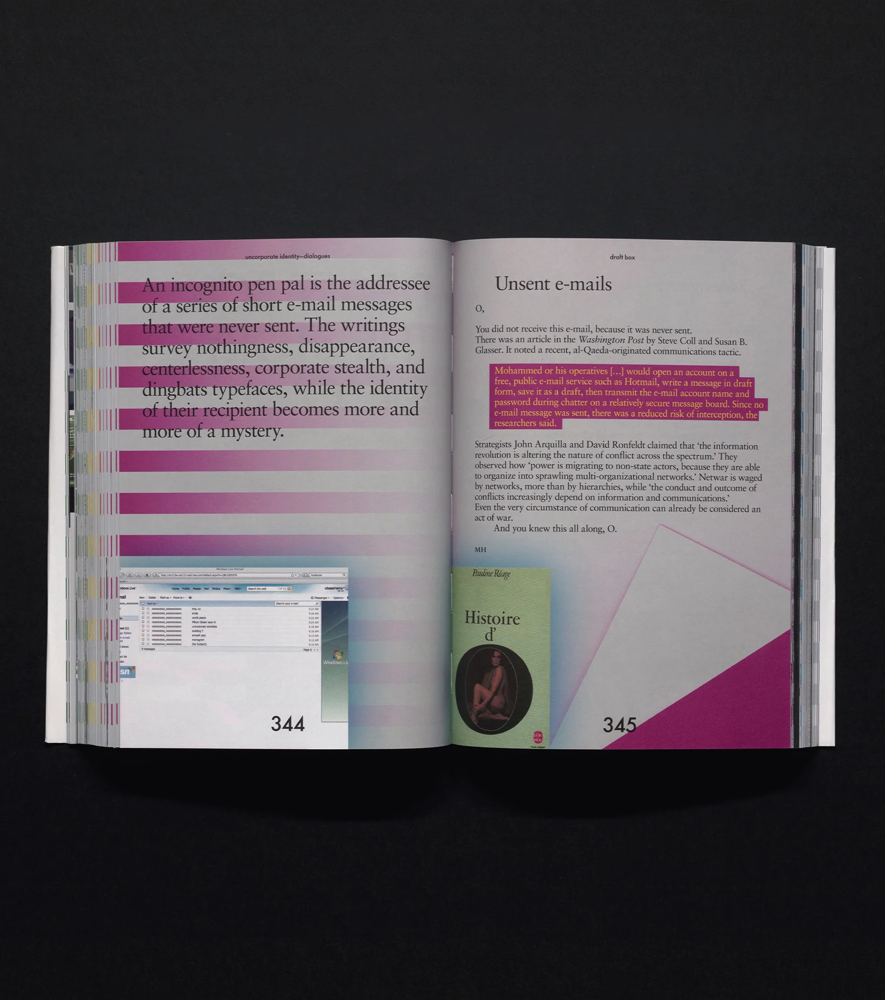

네덜란드를 기반으로 활동하는 그래픽 디자이너로 주로 포토북을 다룬다. 출판사 Fw:Books 운영.
그는 포토북이 복잡한 내러티브를 구축할 수 있다는 점에서 '이야기'를 전달하는 데 완벽한 매체라고 생각한다. Gremmen은 모든 사진이 일종의 복제물이라고 보았는데, '전시'와 '포토북'에서 사진을 보여주는 방식에는 약간의 차이가 있다고 말한다. 우리는 전시에서 여러 장의 사진을 동시에 감상할 수 있으며, 사진에 다가가거나 물러서는 행위를 통해 '나'와 '사진' 사이 거리조절이 가능하다. 반면 포토북에서는 우리가 사진을 보는 순서를 자유롭게 조정할 수 있으며, 사진가와 디자이너는 자신들이 구축한 이야기에 독자를 빠져들게 함으로써 마치 영화 감상과 같은 효과를 불러일으킬 수 있다.
작성중...
최초 작성일 2024.06.06
네덜란드를 기반으로 활동하는 디자이너로 출판사 Roma publications 운영.
Roma는 1998년 설립된 네덜란드의 대표적인 예술 출판사로, 예술 출판물을 생산하고 배급하는 플랫폼의 역할을 넘어서 작가, 디자이너, 사진가, 큐레이터, 시인 등 다양한 분야의 사람들과 긴밀한 협업을 진행 중이다.
작성중...
최초 작성일 2024.06.06
다니엘 판 데르 벨덴(Daniel van der Velden)과 빈카 크뤽(Vinca Kruk)이 2007년에 함께 설립한 네덜란드 기반의 디자이너-예술가 집단. 그들은 미학과 정치의 융합을 꾀하며, 우리가 직면한 정치적 문제를 미적으로나 내용적으로나 중요하게 다루는 데에 집중한다. tumblr: @mthvn / instagram: @metahaven
1. Sealand - Visual Identity
시랜드 공국(Principality of Sealand)은 영국 근처 북해에 위치한 마이크로네이션(micronation)이다. Metahaven은 시랜드가 1990년대 후반 dotcom boom 시기 동안 'Data haven(데이터 피난처)'로서 상징적인 역할을 했다고 말하며 이곳을 정체성, 정치 이론, 네트워크 사회 및 유토피아의 개념이 충돌하는 실험적인 국가로 보았다. Metahaven은 시랜드 공국의 국가 및 영토 정체성, 도상학, 정치 및 역사에 대한 광범위한 연구를 진행하고 비주얼 아이덴티티를 디자인했다.
  2. Uncorporate Identity - Book
2010년 출판된 Uncorporate Identity는 Metahaven의 아이디어 및 프로젝트들을 모아놓은 문집이다. Metahaven은 이 책이 스튜디오 최고의 작품을 선보이고 각자의 에세이를 적은 논문처럼 비춰지지 않으려 노력했으며, 자신들의 작업이 그저 세상의 이야기를 전하기 위한 수단(medium)으로 기능하길 원했다. Uncorporate Identity는 세계화 시대의 디자인을 위한 예술적 선언문이자 오늘날 애매모호한 상태의 아이덴티티와 브랜딩에 대한 조사를 보여주는 책으로, 이를 통해 우리는 각 디자인 프로젝트와 사회정치적 문제에 대한 Metahaven의 통찰을 엿볼 수 있다.
  작성중...
최초 작성일 2024.06.12